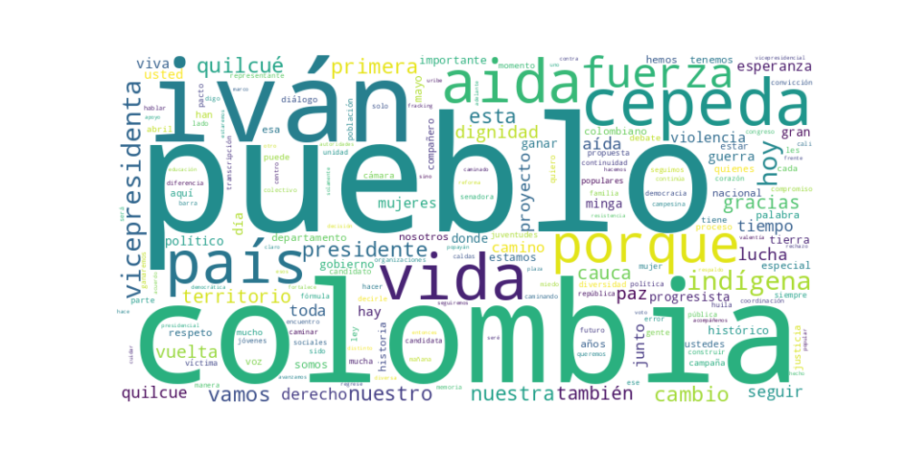

Seguidores: 114,931
1. Perfil de Comunicación: El estilo de comunicación es predominantemente informal y cercano, con un marcado acento en la proximidad emocional y territorial. Se dirige al público utilizando un lenguaje popular y accesible, pero intercala términos propios de la lucha social e indígena (ej. "caminar la palabra", "minga", "territorio"). La comunicación es altamente narrativa y testimonial, basándose en vivencias personales, la historia de lucha de los pueblos y la conexión con las comunidades. Adopta un tono de conversación directa, a menudo utilizando frases incompletas y repeticiones propias de un discurso oral y apasionado, más que de un texto formal escrito.
2. Temas Principales: 1. Continuidad del Cambio y Proyecto Político: El eje central es la defensa y profundización del gobierno de Gustavo Petro ("Gobierno del Cambio"). Se presenta como la garantía de continuidad ("segundo gobierno progresista") y legitima su candidatura como parte de un proceso histórico colectivo. * Ejemplo: "El Pacto Histórico... reafirma que el camino del cambio sigue avanzando en Colombia." 2. Paz y Derechos de las Víctimas: La construcción de paz, la implementación de los acuerdos y la memoria de las víctimas del conflicto son pilares discursivos. Se vincula la paz con la defensa de la vida y la no repetición de la violencia. * Ejemplo: "Porque recordar también es resistir, y en la memoria florece la fuerza para construir un futuro en paz." 3. Defensa del Territorio y los Pueblos Étnicos: Es el tema identitario más fuerte. Aborda la defensa de la tierra, la autonomía indígena (Jurisdicción Especial Indígena), la representación política y la lucha contra el extractivismo (ej. rechazo al fracking). * Ejemplo: "El fracking no solo es una discusión técnica, es una decisión ética... Hay quienes ven la naturaleza como un negocio y hay quienes estamos dispuestos a defenderla como la base de la vida." 4. Educación Pública y Derechos Sociales: Resalta logros como la reforma a la Ley 30 (financiamiento de universidades públicas) y la matrícula cero, presentando la educación como pilar de la paz y la movilidad social. * Ejemplo: "Un hecho histórico que fortalece la educación y reafirma que invertir en conocimiento es apostar por el futuro de Colombia." 5. Unidad Popular y Diálogo Inclusivo: Promueve constantemente la unión de diversas fuerzas (indígenas, afros, campesinos, jóvenes, mujeres, barras futboleras, empresarios) bajo una "gran minga nacional" o "Alianza por la Vida", enfatizando la construcción colectiva. * Ejemplo: "Somos un proyecto que cree que solo es posible construir desde la diversidad."
3. Tono y Sentimiento Dominante: El tono general es esperanzador, combativo y propositivo. Combina un optimismo militante ("¡Vamos a ganar!") con una crítica firme a la oposición (a la que señala como "ultraderecha" que quiere "devolver a Colombia 25 años"). Hay un sentimiento de orgullo y dignidad por los logros del gobierno y la resistencia histórica de los pueblos. Frente a hechos de violencia, el tono se torna sereno pero firme, de denuncia y llamado a la paz, rechazando el miedo.
4. Palabras Clave de Poder: * "El cambio continúa" / "Continuidad del cambio": Eslogan central de la campaña. * "Caminar la palabra": Símbolo de compromiso, acción coherente y diálogo con los territorios. * "Pueblos" / "Territorio" / "Vida": Tríada conceptual que engloba su base social, su espacio de lucha y el objetivo último. * "Minga": Metáfora de trabajo colectivo y movilización nacional. * "En primera vuelta": Objetivo electoral concreto, repetido como mantra. * "Dignidad": Atributo central que reclama para las comunidades y para su propio proyecto. * "Gobierno progresista": Etiqueta que define su orientación política.
5. Conclusión Estratégica: La estrategia de comunicación está diseñada para movilizar una coalición amplia y diversa de bases sociales que se sientan representadas por la lucha histórica de los sectores populares y étnicos. El candidato (Aída Quilcué, cuyo discurso domina el corpus) se posiciona no como una figura technocrática, sino como la voz y el símbolo vivo de esos pueblos. El discurso busca evocar un sentido de pertenencia, empoderamiento colectivo y victoria histórica en curso, apelando a la memoria del conflicto, los logros recientes y el miedo a un retroceso ("que no vuelva el pasado"). Habla primordialmente a las periferias sociales, geográficas y políticas de Colombia, ofreciéndoles no solo políticas públicas, sino reconocimiento, representación y dignidad en el centro del poder. La meta comunicativa es transformar la identidad de "los de abajo" en la fuerza hegemónica que consolide el "cambio".
1. Resumen del Patrón de Éxito: El contenido más exitoso del candidato se basa en una fórmula poderosa que combina la defensa emocional de causas históricas de poblaciones marginadas (indígenas, víctimas) con una confrontación directa y moralmente cargada contra sus opositores políticos. No es discurso abstracto; es narrativa situada en territorios específicos (como el Cauca), vinculando la agenda política actual con heridas históricas del conflicto armado. El éxito reside en encarnar una voz de resistencia, memoria y esperanza colectiva, transformando al candidato en un símbolo vivo de la lucha contra un "pasado de violencia" que, según su relato, sus adversarios representan.
2. Tácticas de Comunicación Clave: * Encarnación de la Memoria y la Resistencia: El candidato (o su fórmula, Cepeda-Quilcué) no solo habla de las víctimas, los indígenas o el Cauca; habla desde ellos. Utiliza su propia biografía y la de su compañero de fórmula (ejemplo: "tradición de lucha") como prueba de autenticidad. Frases como "recordar también es resistir" convierten la memoria en un acto político presente. * Contraste Moral Absoluto (Nosotros vs. Ellos): Define con claridad un "nosotros" (el pueblo, las víctimas, los movimientos sociales, el "gobierno del cambio") frente a un "ellos". Este "ellos" es triple: 1) Los violentos armados, 2) Las élites políticas tradicionales (Uribe, Paloma Valencia), y 3) Las políticas del pasado (seguridad democrática, privatización). Los acusa no solo de errores políticos, sino de "promover la muerte", "pisotear derechos" y representar un "pasado de violencia". * Apelación a la Esperanza Colectiva desde el Dolor: La emoción dominante no es el miedo individual, sino una esperanza colectiva forjada en la resiliencia. Evoca el dolor ("más de 300 mil vidas", "Lucas a lo mataron") para inmediatamente canalizarlo hacia una convocatoria a la acción y la construcción ("construir un futuro en paz", "el tiempo de los pueblos"). La esperanza se presenta como un acto de desafío. * Convocatoria a la Movilización y la Pertenencia: Los llamados a la acción son claros y emocionales: "cuenten con nosotros", "los invito a que nos acompañen", "seguiremos caminando". No son meros pedidos de voto; son invitaciones a formar parte de una "minga", un movimiento colectivo. El uso de hashtags como #JurisdicciónIndígenaYa y #alianzaporlavida refuerza este sentido de comunidad y causa.
3. Temas de Mayor Resonancia: 1. Paz y Memoria Histórica: La paz no como concepto diplomático, sino como justicia para las víctimas y rechazo a un pasado específico (ej. falsos positivos). Es el tema vertebral. 2. Derechos Étnicos y Territoriales: La defensa de la jurisdicción indígena y la autonomía de los pueblos como símbolo máximo del "cambio". 3. Defensa de lo Público y lo Social: La universidad pública, la salud, las pensiones. Presentados como conquistas sociales amenazadas por "la privatización" y "la mercantilización". 4. Denuncia de la Violencia en el Cauca: Usa la crisis en este departamento como microcosmos de la lucha nacional entre su proyecto de paz y el "terrorismo" del pasado.
4. Perfil de la Audiencia Implícita: El discurso apela principalmente a una audiencia ya movilizada políticamente: la base social del "cambio". Son jóvenes universitarios, activistas sociales, líderes étnicos, víctimas del conflicto y ciudadanos con alta conciencia política que rechazan el establishment tradicional. El lenguaje asume un conocimiento compartido de símbolos (Lucas Villa, la Minga, la seguridad democrática) y un rechazo visceral a figuras como Uribe. No busca persuadir al indeciso neutro; busca energizar, cohesionar y dar certeza moral a su propio campo.
5. Conclusión Estratégica: La potencia fundamental de su discurso radica en su autenticidad narrativa y posición moral. No es un político que habla sobre temas; es un líder que emana de las luchas que relata (indígena, defensora de derechos humanos). Esto le otorga una autoridad difícil de cuestionar para su base y le permite establecer contrastes morales (ética vs. corrupción, vida vs. muerte, futuro vs. pasado) en lugar de solo contrapuntos programáticos. Su poder está en convertir la contienda electoral en un capítulo más de una lucha histórica épica, donde votar por él no es una simple elección administrativa, sino un acto de reparación histórica y defensa de la vida. Lo diferencia del discurso político tradicional porque se sitúa desde la periferia geográfica y social (territorios como el Cauca, los pueblos indígenas) para reinterpretar el centro del poder y la historia nacional.

Caption: Aprobado en tercer debate, en la Comisión Primera de la Cámara, el Proyecto de Ley Estatutaria No. 496 de 2025 Cámara No. 050 de 2025 Senado que reglamenta el artículo 246 de la Constitución y fortalece la coordinación entre la Jurisdicción Especial Indígena y el sistema judicial nacional. Estamos a un paso de avanzar y cumplirle a los 115 pueblos indígenas de Colombia: esta ley garantiza autonomía, establece rutas claras de coordinación y brinda seguridad jurídica. Agradecimiento especial a las Autoridades Indígenas y Congresistas en conjunto que lucharon por este logro. Un proceso construido con diálogo real: más de 60 encuentros, 5.185 participantes y un proceso de consulta previa y concertación. #JurisdicciónIndígenaYa ✊🏽
Likes: 6,223 | Comentarios: 159 | Reproducciones: 37,447
Ver en InstagramCaption: Un saludo grande Colombianos en el exterior🇨🇴🫀
Likes: 7,938 | Comentarios: 715 | Reproducciones: 50,826
Ver en InstagramCaption: CAUCA de dignidad y resiliencia que no volverá al pasado✊🏽 ¡Cuenten con nosotros siempre para la Paz! 🌀🍃
Likes: 531 | Comentarios: 26 | Reproducciones: 3,918
Ver en Instagram